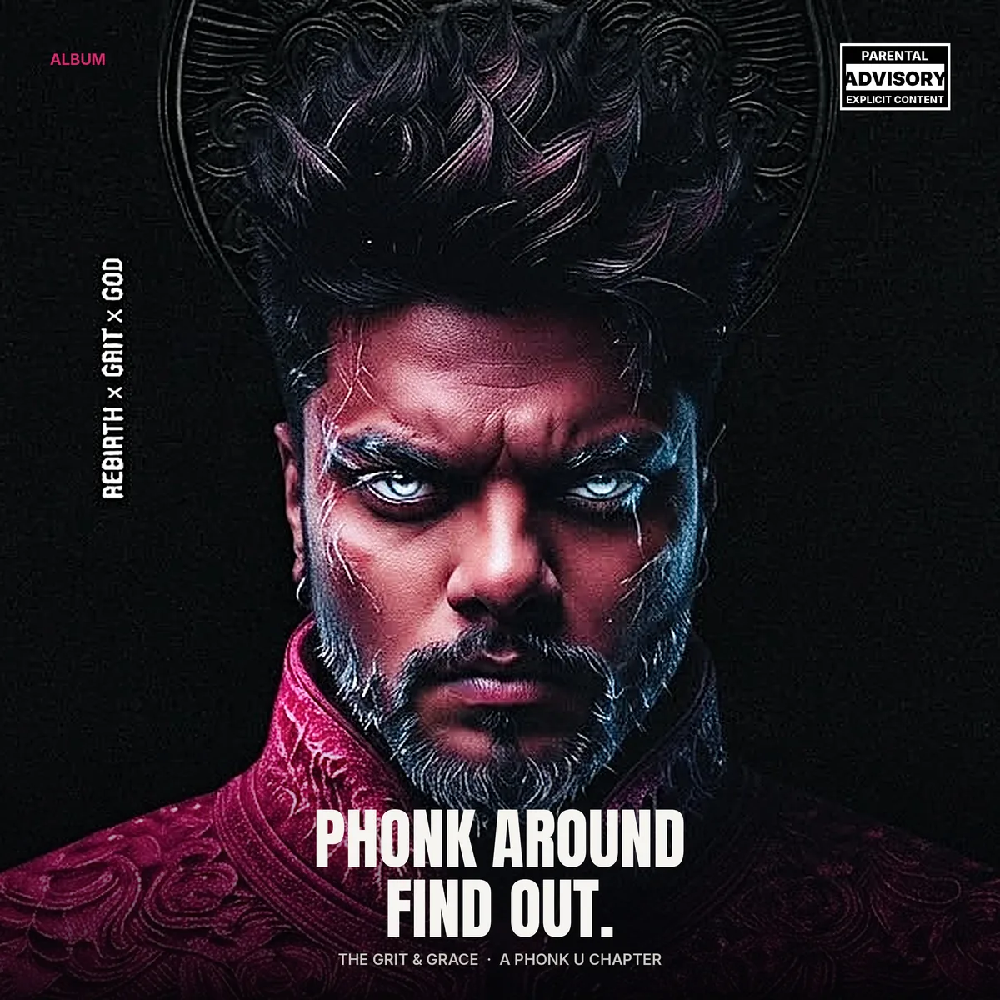
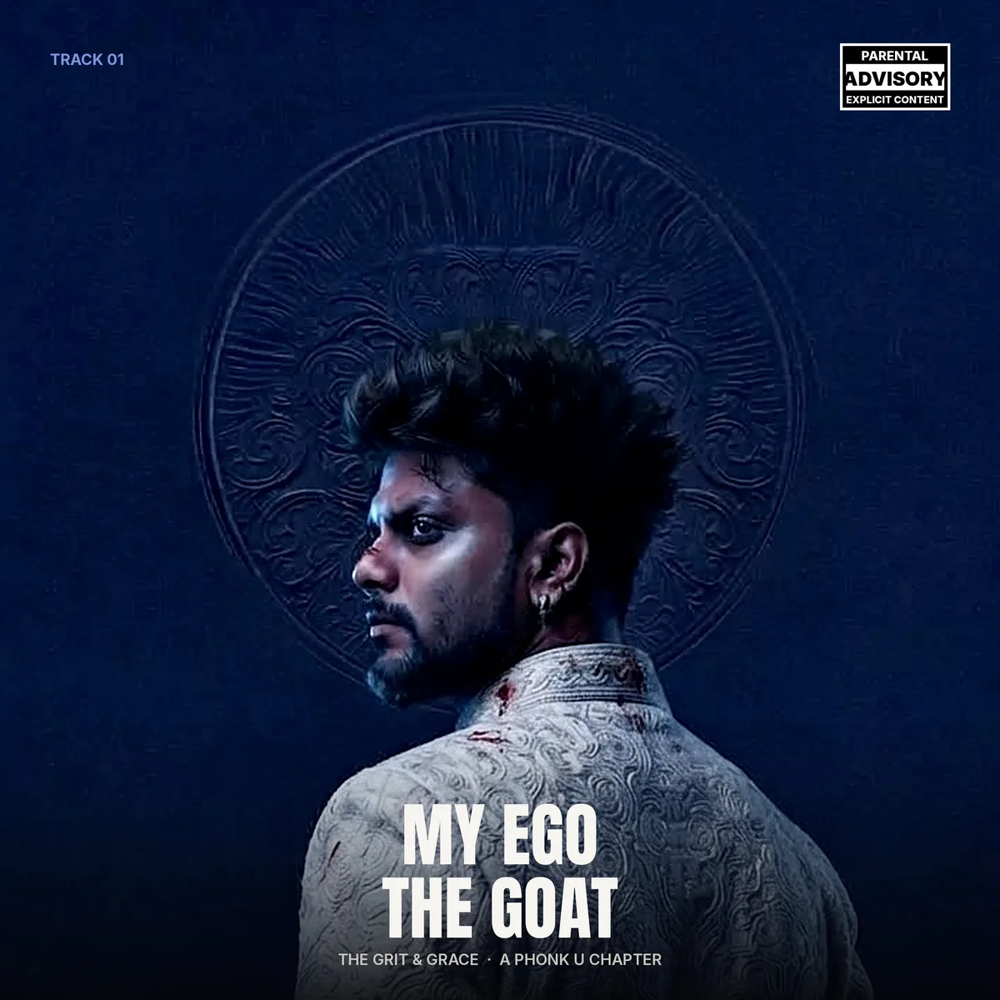
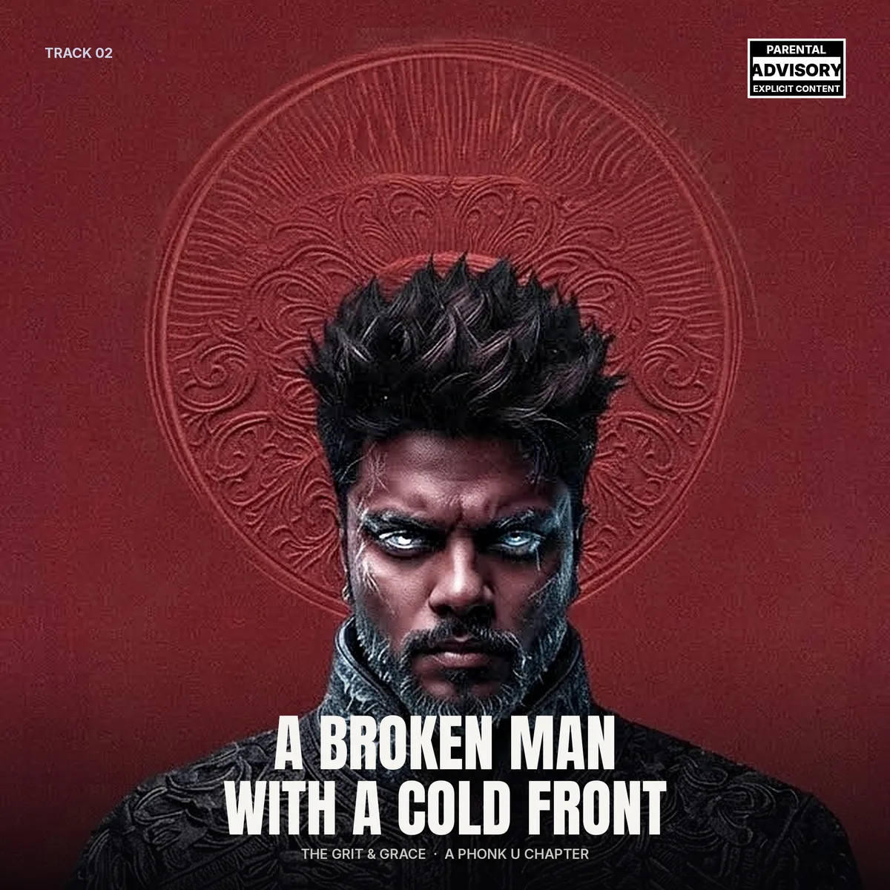
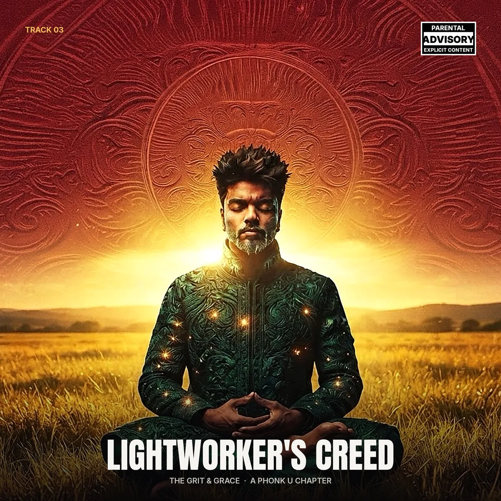

Emergency armor
When betrayal and trauma hit, the ego steps in, not as a flaw but as a hard shield that blocks the pain and keeps you moving.
Navaneet Mohan Nair · Debut album
Rebirth × Grit × God
A dark drift-phonk journey through ego death, isolation and rebirth. Mafia-noir drums, weeping shehnai and dark violin from 140 to 160 BPM.

Spiritual paths preach dissolving the ego. The wounded warrior flips the script: the ego is the shield that keeps you alive through the darkest winter.
When betrayal and trauma hit, the ego steps in, not as a flaw but as a hard shield that blocks the pain and keeps you moving.
“I am too valuable to be destroyed by this.” Pride becomes the anchor that turns grief and humiliation into cold, calculated resilience.
This survival instinct isn't quiet. It's high-speed and aggressive, the swagger needed to outrun past failures.
The ego is the hardened stepping stone that preserves the self until true rebirth and higher alignment can take place.
Rebirth through grit, guided by God.
Three chapters, three worlds. From armored swagger to frozen isolation to the finale's spiritual elevation.

The anthem of an ego forged in fire. Unshakeable, armored self-belief: a man standing tall, refusing to break under pressure.
Punchy mafia drums, gritty violin, an intricate dark shehnai and a wandering flute. Razor drops and sudden, breathtaking silences.

Internal fracture and the cold front a person puts up after deep betrayal, turning vulnerability into hard armor.
Chilling winds, weeping shehnai and flute, then heavy brooding sub-bass. Wide empty space against hard-hitting rhythmic violence.

The spiritual paradox of the wounded warrior: a protector who must navigate darkness to guard the light.
Howling cold winds, a distant raven and hawk cry, then a majestic blend of dark shehnai and crying violin, closing the album in A major.
The Grit & Grace · A Phonk U Chapter
Three tracks. One rebirth. Pre-save goes live with the release date.